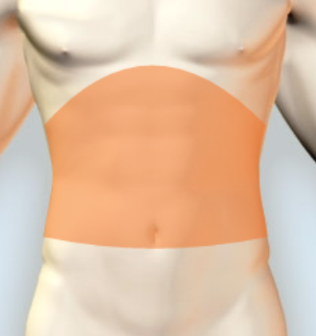

Step 1: Choose Symptom(s)
Bloody or red colored vomit
Bruising or discoloration
Change in bowel habits
Coffee ground colored vomit
Constipation
Distended stomach
Lump or bulge
Step 2: Possible Conditions
Trauma or injury <Probability of 0.5>
Gastrointestinal bleeding <Probability of 0.2>
Bleeding esphageal varices <Probability of 0.1>
Esophageal cancer <Probability of 0.1>
Peptic ulcer <Probability of 0.1>